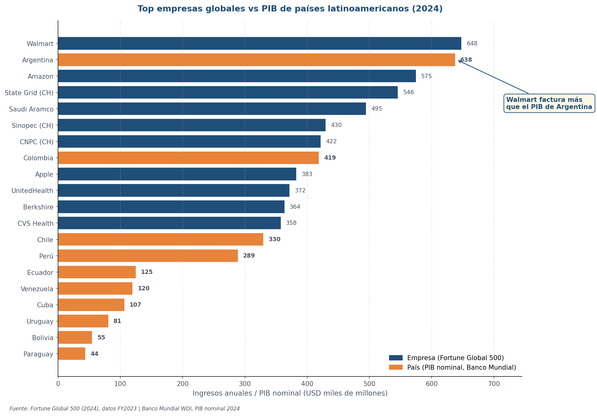
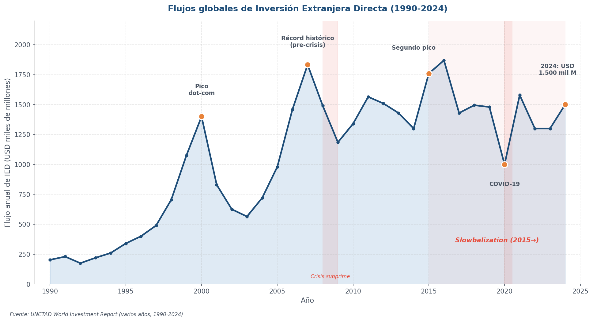
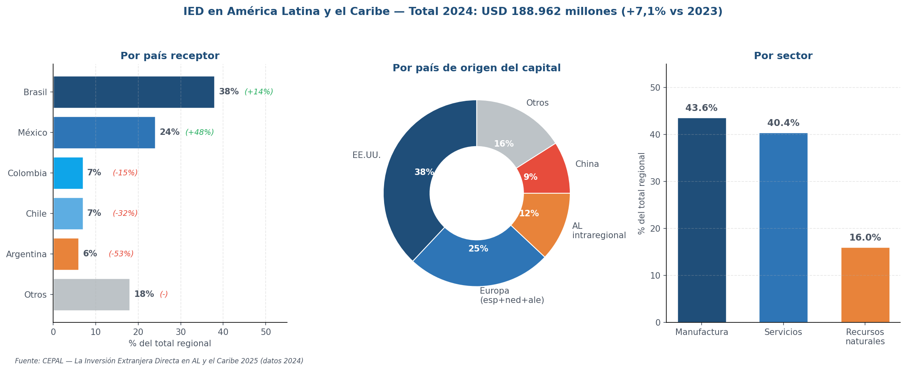
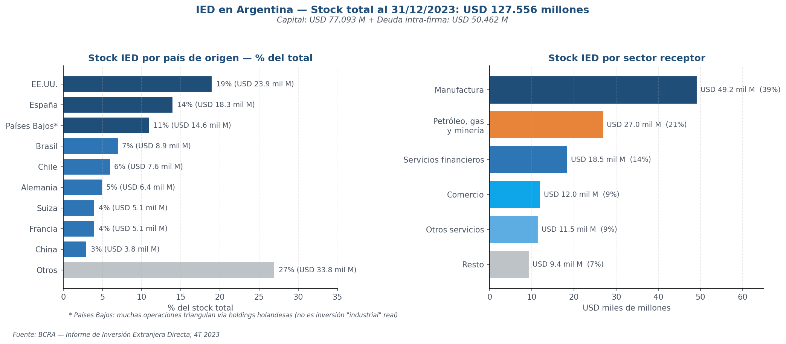
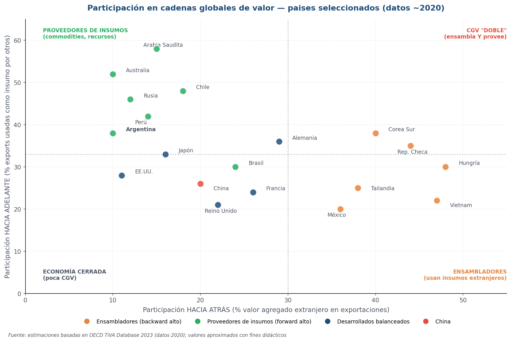
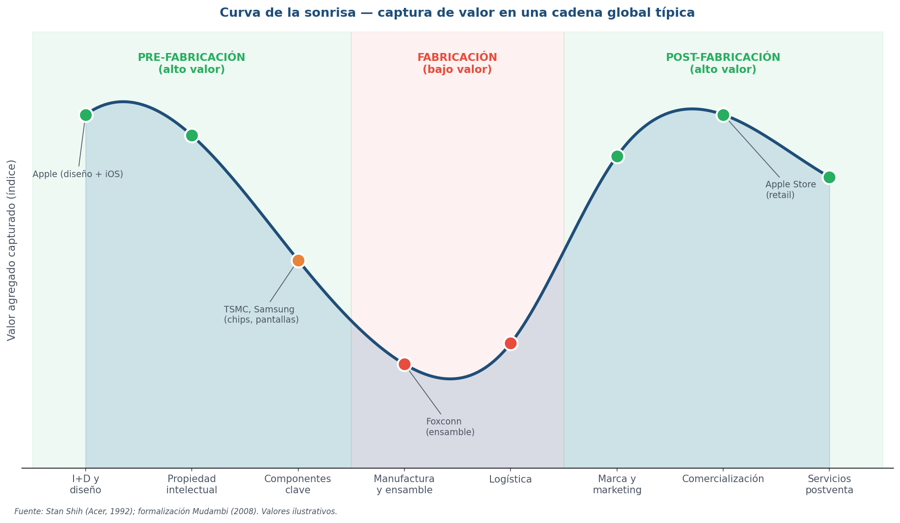
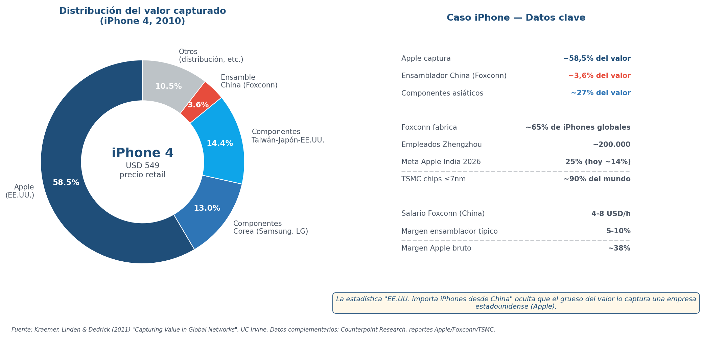

Economía Internacional — Clase 8
Empresas transnacionales, IED y cadenas globales de valor
4 de junio de 2026
UMET - Licenciatura en Economía | 2026
Lo que dejamos en S7
Cerramos U4 con tres respuestas heterodoxas — hoy abrimos U5 con otra pregunta
- Emmanuel — intercambio desigual: el comercio transfiere valor de la periferia al centro vía diferencias salariales — "los pobres son pobres porque les pagan poco por lo que producen"
- Ventajas dinámicas (List, Kaldor): las ventajas comparativas se construyen produciendo (learning by doing), no se heredan
- Neoschumpeterianos: el desarrollo depende de capacidades tecnológicas acumuladas — complejidad económica (Hidalgo-Hausmann), desindustrialización prematura (Rodrik)
- Brecha salarial global (S7): China pasó de < 2 USD/h en 2005 a > 6.5 en 2023 → estrategia China+1 (Vietnam, Bangladesh, México)
- Quedaron preguntas: ¿quién organiza esa producción global? ¿Cómo se distribuye el valor dentro de la cadena? → eso responde la Unidad 5
La pregunta de la Unidad 5
- ¿Cómo cambia la teoría del comercio internacional cuando la unidad de análisis deja de ser el país y pasa a ser la firma transnacional?
- Tres respuestas equivalen a tres corpus teóricos:
- Teoría de la ETN (Hymer, Dunning, Buckley & Casson): por qué las firmas se internacionalizan
- Comercio intra-firma + fragmentación productiva (Grossman & Rossi-Hansberg): el comercio mundial se vuelve comercio de tareas
- Cadenas globales de valor (Gereffi): cómo se organiza y cómo se distribuye el valor
¿Qué vamos a ver hoy?
- Bloque 1 — Puente: ¿alcanza con mirar solo países? Lo que las teorías tradicionales dejan sin explicar
- Bloque 2 — Teoría de la ETN: Mundell, Hymer, Buckley & Casson, Dunning OLI
- Bloque 3 — IED en profundidad: definición, motivaciones (4 tipos), modos de entrada, datos globales y argentinos
- Bloque 4 — Comercio intra-firma + fragmentación: precios de transferencia, offshoring, comercio de tareas
- Bloque 5 — CGV intro: Gereffi, participación, gobernanza, smile curve, upgrading
- Cierre: síntesis + lecturas U5 + guía S9
Bloque 1 — ¿Alcanza con mirar solo países?
Pregunta del bloque: ¿la teoría del comercio puede seguir tratando al país como única unidad de análisis?
Lo que respondieron las teorías que vimos
Cinco respuestas distintas a la misma pregunta
- Ricardo (U2) — diferencias de productividad relativa: cada país se especializa donde tiene ventaja comparativa
- Heckscher-Ohlin (U2) — diferencias en dotación factorial: cada país exporta lo que usa intensivamente de su factor abundante
- Krugman (U3) — economías de escala + diferenciación: países similares comercian variedades dentro de los mismos sectores
- Melitz (U3) — firmas heterogéneas: dentro de cada sector, solo las firmas más productivas exportan
- Estructuralistas + neoschumpeterianos (U4) — el comercio reproduce estructuras desiguales centro-periferia
- Pero todas estas teorías comparten un supuesto: la unidad de análisis es el país
Tres hechos que rompen la imagen de "países que comercian"
La empresa global aparece como actor irreductible
- Hecho 1 — Una porción del comercio mundial es intra-firma: filiales de la misma ETN comerciando entre sí. UNCTAD estima que ~80% del comercio mundial pasa por cadenas coordinadas por ETN, y ~33% es comercio intra-firma puro
- Hecho 2 — Los productos no son "de un país": un iPhone tiene chips de Corea, lentes de Japón, ensamblaje en China, software de EE.UU., baterías de China. ¿De qué país es?
- Hecho 3 — Las ETN son comparables a Estados: las ventas de Walmart (~USD 650 mil millones) superan el PIB de cualquier país de AL salvo Brasil y México
- Implicancia teórica: hay un actor — la empresa transnacional — cuya escala y poder no es captado por las teorías centradas en países
La unidad de análisis se desplaza
Cuatro niveles que conviven en el comercio internacional
- Nivel país (Ricardo, H-O, Prebisch): ventajas comparativas, dotaciones, posición estructural
- Nivel firma (Melitz, Hymer, Dunning): heterogeneidad, ventajas específicas, decisión de internacionalización
- Nivel red (Gereffi, UNCTAD): cadena de valor, gobernanza, posición en la red productiva
- Nivel tarea (Grossman & Rossi-Hansberg): la decisión de qué actividad realizar dónde y por quién
- No se reemplazan — se superponen: cada teoría ilumina un aspecto. La novedad es agregar firmas, redes y tareas, no descartar países
- Argentina exporta soja (país, Ricardo) pero también Cargill exporta soja desde Argentina (firma, Dunning) en una cadena que termina en una procesadora en China (red, Gereffi) cumpliendo la tarea de "abastecer de aceite vegetal" (tarea, G&RH)
Bloque 2 — Teoría de la ETN
Pregunta del bloque: ¿por qué una empresa decide producir afuera en vez de exportar desde su país?
La mirada neoclásica: IED como movimiento de capital
El marco que Hymer va a romper
- Robert Mundell (1957) — International Trade and Factor Mobility — extiende H-O
- Pregunta: si los factores de producción pueden moverse entre países, ¿qué pasa con el comercio?
- Resultado teórico: bajo supuestos H-O, IED y comercio son sustitutos perfectos
- Si el capital fluye desde el país abundante en capital al país abundante en trabajo, los salarios y la tasa de retorno se igualan internacionalmente
- El comercio que antes existía ya no es necesario: el mismo equilibrio se alcanza con movilidad de factores
- Implicancia neoclásica: la IED es una variable de arbitraje financiero — el capital va donde la tasa de retorno es mayor
- El problema: la firma es una caja negra. La teoría no distingue entre flujo de capital (financiero) y flujo de control productivo (la IED real)
Stephen Hymer — la ruptura fundacional
Fuente: Wikipedia / archivo MIT
- Economista canadiense, doctorado en MIT bajo la dirección de Charles Kindleberger
- Tesis doctoral 1960: The International Operations of National Firms — durante años ignorada por el mainstream
- Murió joven a los 39 años en accidente de tránsito (1974); su tesis fue publicada póstumamente en 1976
- Tradición marxista: leyó a Marx, Baran, Sweezy; pensaba a la ETN como instrumento de poder oligopólico
- Idea central: la IED no es flujo financiero; es decisión estratégica de control de mercados, tecnología y proveedores
- Cita memorable: "el capital extranjero no es solo capital; es marca, tecnología, organización y poder de mercado"
¿Por qué una firma extranjera supera la desventaja de operar afuera?
Hymer: necesita ventajas propias que compensen
- Desventaja inherente de la firma extranjera: no conoce mercado, regulación, cultura, redes locales
- Pregunta de Hymer: si la desventaja existe, ¿por qué hay tantas IED?
- Respuesta: las ETN tienen ventajas específicas que compensan — tangibles (tecnología, patentes, escala) e intangibles (marca, management, redes)
- Crítica al marco neoclásico: la IED NO es arbitraje de tasas — es ejercicio de poder oligopólico
- Objetivo real: no solo rentabilidad — es control del mercado, de tecnología, de proveedores
- Implicancia política: asimetría de poder entre ETN y Estados periféricos receptores
¿Por qué internalizar en vez de contratar?
Una firma se vuelve ETN cuando el mercado externo falla
- Buckley & Casson (1976) — The Future of the Multinational Enterprise
- Base teórica: Coase (1937) + Williamson (1975) — costos de transacción
- Pregunta: si la firma tiene ventaja específica, ¿por qué no licencia en vez de abrir filial?
- Respuesta: porque los mercados de intangibles fallan. La ETN internaliza cuando hay:
- Conocimiento tácito que no se empaqueta + activos intangibles vulnerables (marca, patentes)
- Bienes complejos de calidad inverificable + riesgo contractual alto
- Implicancia: la frontera de la firma se expande internacionalmente cuando el mercado falla
- Rugman (1981) lo extendió como base de la teoría dominante de la ETN
John Dunning — el sintetizador
Fuente: Wikipedia / University of Reading
- Economista británico — Universidades de Reading y Rutgers durante 40+ años
- Padre de la "teoría ecléctica" de la producción internacional
- Trabajo seminal: Trade, Location of Economic Activity and the Multinational Enterprise (1977)
- Idea central: la IED ocurre cuando se combinan simultáneamente tres ventajas — Ownership, Location, Internalization (OLI)
- Marco integrador: Ownership (Hymer) + Location (teoría tradicional) + Internalization (Buckley & Casson, Coase)
- Influencia: el marco OLI es hoy el lenguaje estándar de UNCTAD, OECD y banca multilateral
Tres ventajas que tienen que combinarse simultáneamente
Ownership + Location + Internalization
- O — Ownership: ventajas específicas de la firma (Hymer) — tecnología, marca, escala, management
- L — Location: ventajas del país receptor — recursos, mercado, salarios, instituciones, acuerdos
- I — Internalization: conviene internalizar vs licenciar (Buckley & Casson) — control de calidad, conocimiento tácito
- Lógica decisional:
- Solo O → la firma exporta
- O + L → produce afuera pero licencia
- O + L + I → IED con filial propia (la firma se vuelve ETN)
- Clave: las tres tienen que combinarse simultáneamente
¿Qué busca la firma cuando invierte afuera?
Cuatro tipos de IED por motivación
- Resource-seeking — acceso a recursos naturales (Vaca Muerta, litio NOA, agronegocios pampeanos)
- Market-seeking — producir cerca del consumidor (automotrices Mercosur, bancos, retail)
- Efficiency-seeking — bajar costos / fragmentar producción (maquilas México, electrónica Vietnam)
- Strategic-asset-seeking — adquirir conocimiento o marcas (compras chinas de tech europea, Mercado Libre)
- Implicancia para el desarrollo: el tipo de IED determina el efecto sobre el país receptor
- Resource/market dan empleo pero pocas capacidades; efficiency fragmenta pero captura poco; strategic-asset transfiere tecnología si hay capacidades absortivas locales
¿Quién es más grande, Walmart o Argentina?

Fuente: Fortune Global 500 (2024); Banco Mundial WDI (2024); UNCTAD WIR (2013, 2024)
- Walmart (USD 648 mil M) > PIB de Argentina (USD 638 mil M, 2024)
- Amazon (USD 575 mil M) > PIB de Colombia + Chile combinados
- Saudi Aramco (USD 495 mil M) > PIB de Chile + Perú combinados
- Apple (USD 383 mil M) > PIB de Perú + Ecuador combinados
- Top 500 empresas globales (Fortune Global 500 2024) facturan USD 41 billones en conjunto — equivalente al 38% del PIB mundial — y emplean 70,5 millones de personas
- UNCTAD (WIR 2013): ~80% del comercio mundial pasa por cadenas de valor coordinadas por ETN; ~1/3 es comercio intra-firma (entre filiales de la misma empresa)
- Implicancia: las ETN no son agentes neutrales del mercado — son actores con poder estatal comparable
Bloque 3 — IED en profundidad
Pregunta del bloque: ¿cómo se mide, dónde está, qué efectos tiene la IED en el mundo y en Argentina?
Tres formas de cruzar la frontera económicamente — solo una es IED
Definición y distinciones conceptuales
- Exportación: vender al exterior — sin propiedad ni control
- Inversión de cartera: comprar acciones o bonos — propiedad parcial sin control
- IED: inversión que controla o influye de modo duradero una empresa en otro país
- Umbral FMI/OECD: ≥10% del capital con voto — componentes: aporte + reinversión + deuda intra-firma
- Greenfield (planta nueva) vs M&A (compra de empresa existente) — globalmente 2/3 son M&A
- Horizontal (Toyota Brasil = Toyota Japón) vs Vertical (Apple: diseño EE.UU., ensamble China)
- NO es IED: préstamos, bonos, especulación cambiaria, exportación, licencias
Cuatro décadas de IED mundial

Fuente: UNCTAD World Investment Report (varios años)
- Hitos: 1990 (USD 203 mil M, inicio serie) → 2000 (1.400, dot-com) → 2007 (1.833, récord) → 2015 (1.760, 2º pico) → 2020 (caída COVID) → 2023 (1.300, -2%) → 2024 (1.500, +4%)
- Patrón 1: entre 1990-2007 la IED creció más rápido que el comercio
- Patrón 2 (post-2015): slowbalization — estancamiento estructural
- Causas: Brexit (2016) + guerra comercial EE.UU.-China (2018) + COVID + guerra en Ucrania
AL recibió USD 189 mil millones en 2024

Fuente: CEPAL — La Inversión Extranjera Directa en América Latina y el Caribe 2025 (publicado 2025)
- Total AL 2024: USD 188.962 millones (+7,1% vs 2023)
- Por país receptor: Brasil 38% (+14%), México 24% (+48% por nearshoring), Colombia 7% (-15%), Chile 7% (-32%), Argentina 6% (-53%) — la caída más fuerte
- Por país de origen: EE.UU. 38% (sigue liderando), Europa ~25%, China crece en recursos
- Por sector: Manufactura 43,6% (impulsada por nearshoring mexicano), Servicios 40,4%, Recursos naturales 16%
USD 127.500 millones de stock — quién invierte y dónde

Fuente: BCRA — Informe de Inversión Extranjera Directa, 4T 2023
- Stock total IED en Argentina (cierre 2023): USD 127.556 millones = Capital 77 mil M + Deuda intra-firma 50 mil M
- Top 3 países de origen: EE.UU. 19%, España 14%, Países Bajos 11%* — los 3 juntos ~44%
- Por sector (stock): Manufactura lidera con USD 49 mil M, sigue petróleo/gas/minería (Vaca Muerta + litio), financiero y servicios
- Flujos 2023: USD 22.352 M = solo 7% capital fresco + reinversión + deuda intra-firma
- Importante: la mayoría de la IED es reinversión y deuda interna, no capital nuevo
- Países Bajos = triangulación financiera vía holdings, no IED industrial real
La IED Sur-Sur — el caso latinoamericano
Empresas latinoamericanas que se internacionalizaron
- Ranking BCG 2018 (top 100 multilatinas): México 28, Brasil 26, Chile 18, Colombia 11, Argentina 9, Perú 5
- Multilatinas argentinas clave: Techint-Tenaris (30+ países), Arcor (4 continentes), Mercado Libre (18 países AL), Globant (30+ países)
- Composición regional cambió: commodities pasó de 12% (2009) a 7% (2018); bienes de consumo de 31% a 44%
- Patrón: primero regionales (AL), después globales — Sur-Sur emergente
- Importancia teórica: OLI suponía ETN del Norte; las multilatinas obligaron a reformular el marco con "ventajas Sur-específicas"
El debate estructuralista: oportunidad o subordinación
Kulfas-Porta-Ramos + Chudnovsky-López — la lectura desde AL
- Pregunta: ¿la IED transfiere tecnología y desarrolla la economía local?
- Mirada optimista (UNCTAD/BM/OECD): IED aporta capital, tecnología, empleo, divisas, eslabonamientos
- Mirada crítica latinoamericana:
- Kulfas, Porta, Ramos: IED en AL selectiva — concentrada en recursos y servicios, baja transferencia
- Chudnovsky & López: IED puede generar enclaves sin spillovers a la economía local
- Factor decisivo: las capacidades absortivas previas del país receptor
- Caso comparado: Corea (1960-90) — IED selectiva + política industrial → Samsung/Hyundai. Argentina ISI — IED automotriz sin política de proveedores → 60 años con balanza sectorial deficitaria
- Implicancia política: el TIPO de IED y la POLÍTICA importan más que el monto
Bloque 4 — Comercio intra-firma y fragmentación productiva
Pregunta del bloque: ¿qué pasa cuando una parte importante del "comercio mundial" no es entre países sino dentro de las empresas?
Una parte enorme del "comercio mundial" es interno a las empresas
Cuando las filiales se venden entre sí
- Comercio intra-firma: transacciones internacionales entre filiales de una misma ETN
- Aparecen como importaciones/exportaciones en las estadísticas — pero NO son operaciones de mercado
- Estimaciones (UNCTAD): ~80% del comercio mundial pasa por cadenas ETN; ~33% es intra-firma estricto. EE.UU.: 48% importaciones y 30% exportaciones son intra-firma (Lanz-Miroudot 2011)
- Ejemplo argentino: comercio automotor ARG-BRA está dominado por VW↔VW, Ford↔Ford, GM↔GM
- Por qué importa teóricamente:
- El precio lo decide internamente la corporación, no el mercado
- Las estadísticas bilaterales engañan sobre el comercio entre países
- Las regulaciones se pueden eludir vía precios de transferencia
Cómo una empresa optimiza tributariamente sin pasar por el mercado
El caso que la UE definió en 2024
- Precio de transferencia: precio que una filial cobra a otra del mismo grupo
- Problema: sin contraparte independiente, sirve para mover ganancias contables entre jurisdicciones
- Caso Apple-Irlanda (1991-2014): ingresos de Europa+África+India canalizados vía Irlanda → tasa efectiva <1%
- Resolución judicial:
- 2016: Comisión Europea ordena recuperar EUR 13.000 M por ayuda estatal ilegal
- 2020: Tribunal General anula la decisión
- 10/sep/2024: TJUE (Gran Sala) confirma definitivamente la orden de 2016 — Apple paga
- OECD BEPS (Pilar 1 + Pilar 2): impuesto mínimo global del 15% — 140+ países adheridos
El producto final ya no se hace en un solo país
La cadena productiva se descompone en etapas localizadas geográficamente
- Tradicionalmente: un país producía el bien completo (autos, ropa, electrónica) y lo exportaba
- Hoy: cada etapa puede estar en un país distinto — diseño → insumos → componentes → ensamble → logística → marketing
- El comercio mundial cambia: ya no son bienes finales sino partes, componentes, servicios y tareas
- Dato clave: hoy ~70% del comercio mundial es de bienes intermedios, no de bienes finales
- Ejemplos: un Boeing 787 tiene componentes de 70 países; un auto moderno tiene partes de 20-30
Cuatro combinaciones posibles
Retomando Grossman & Rossi-Hansberg (S5)
- Dos decisiones simultáneas que toma la firma sobre cada tarea:
- ¿Dónde? Doméstico vs Extranjero
- ¿Quién? Propio (interno) vs Tercero (externo)
- Cuatro combinaciones:
- Offshoring: trasladar la actividad afuera, pero MANTENIENDO el control (filial propia)
- Outsourcing: tercerizar la actividad a otra empresa, sea acá o afuera
- Outsourcing offshore (offshore outsourcing): doble decisión — afuera Y a un tercero
- Ejemplo: Apple diseña iPhones internamente (interno + doméstico), ensambla afuera en Foxconn (outsourcing offshore), tiene tiendas propias en muchos países (offshoring)
- Conexión con OLI: la decisión "interno vs externo" es la I de Internalización de Dunning
Sin diferencias salariales, no habría fragmentación productiva masiva
Retomando S7 — China + 1 y la era de la deslocalización
- Motor de la fragmentación: las diferencias salariales hacen que la misma tarea cueste muy distinto
- Salarios industriales por hora (~2023): Alemania 38 | EE.UU. 30 | Japón 25 | China 6,5 (era 2 en 2005) | Vietnam 2-3 | India 1,5-2 | Bangladesh 1-1,5
- China + 1: China dejó de ser el más barato (salarios x3 desde 2005) → empresas diversifican hacia Vietnam, Indonesia, India, México
- Nearshoring (2018+): tensiones EE.UU.-China + COVID + Ucrania → México hacia EE.UU., Polonia hacia UE
- Emmanuel revisitado: la fragmentación reproduce la transferencia de valor — quien ensambla captura poco, quien diseña captura mucho
Bloque 5 — Cadenas globales de valor
Pregunta del bloque: ¿cómo se organiza, gobierna y distribuye el valor en la producción mundial fragmentada?
Conjunto de actividades necesarias para llevar un producto desde la concepción hasta el consumo final
Distribuidas entre distintos países y empresas — coordinadas por una "empresa líder"
- Cadena de valor (Porter, 1985): secuencia de actividades de una empresa, del insumo a la venta
- Cadena global de valor (Gereffi, 1994-): cuando la cadena se distribuye internacionalmente y la coordina una empresa líder
- Actividades típicas: I+D y diseño → insumos → componentes → ensamble → logística → marketing → comercialización → postventa
- Características clave:
- Múltiples países + múltiples empresas (filiales propias + proveedores)
- Empresa líder coordina (Apple, Toyota, Nike, Walmart)
- División del trabajo cognitivo — cada etapa requiere capacidades distintas
- Bibliografía clave: Gereffi (2001) en `bibliografia/unidad5/`
Dos formas de participar en una cadena global

Fuente: OECD TiVA Database 2023 (datos 2020); fichas país TiVA
- Hacia atrás (Backward): % de valor agregado extranjero en las exportaciones — cuán "ensamblador" es el país
- Hacia adelante (Forward): % de exportaciones que se usan como insumo en exports de otros — cuán "proveedor" es
- Indicador integrado: participación total = backward + forward
- Patrones típicos:
- Asia manufacturera (Vietnam, Corea, Chequia): backward altísima — ensamblan
- AL extractiva (Argentina, Chile, Brasil): forward alta, backward baja — proveen commodities
- Desarrollados (Alemania, EE.UU.): forward alta + backward media — diseñan/proveen pero también importan
- Brasil: valor agregado extranjero solo 24,7% (vs promedio OECD 44,5%) — bajo encadenamiento
No alcanza con participar — importa DÓNDE participás
Upstream / downstream + actividades de alto/bajo valor
- Upstream: etapas iniciales — recursos, insumos, conocimiento de base, tecnología fundamental
- Downstream: etapas finales — ensamble, distribución, marca, comercialización
- Ojo: la posición NO determina automáticamente el valor capturado
- Upstream puede ser alto valor (TSMC) o bajo (soja argentina)
- Downstream puede ser alto valor (Apple) o bajo (Foxconn)
- Lo que importa es QUÉ se hace, no DÓNDE: conocimiento tácito, tecnología propia, control de marca, poder de mercado
- Conexión OLI: las ventajas O dan poder de captura independientemente de la posición
¿Cómo se coordina una CGV?
Gereffi, Humphrey & Sturgeon (2005) — la tipología clásica
- Pregunta de la gobernanza: ¿quién manda en la cadena? ¿Cómo se coordina la actividad de múltiples empresas en múltiples países?
- Gereffi, Humphrey & Sturgeon (2005) identificaron 5 tipos de gobernanza, ordenados por grado de coordinación:
- El factor clave que determina el tipo de gobernanza:
- Complejidad de la transacción
- Codificabilidad de la información
- Capacidades del proveedor
- Implicación: la gobernanza define quién captura valor y quién tiene margen para aprender (upgrading)
No todas las actividades capturan el mismo valor

Fuente: Stan Shih (1992); Mudambi (2008)
- Concepto: en muchas CGV, las actividades de mayor valor agregado están en los extremos, no en el medio
- Extremos altos: pre-fabricación (I+D, diseño, propiedad intelectual) + post-fabricación (marca, marketing, plataformas)
- Medio bajo: manufactura/ensamble — actividad codificable, replicable, muchos competidores
- Origen: Stan Shih (fundador de Acer, 1992) — formalizado por Mudambi (2008)
- Implicancia para el desarrollo: quien queda en el medio captura poco — el upgrading es moverse a los extremos
- Hoy la sonrisa se profundizó: digitalización amplificó el valor de plataformas y software vs hardware
Quién captura el valor de un iPhone de USD 1.000

Fuente: Kraemer, Linden & Dedrick (2011); Counterpoint Research; reportes corporativos Apple/Foxconn/TSMC
- Estudio clásico: Kraemer, Linden & Dedrick (UC Irvine, 2011) sobre el iPhone 4 (USD 549 retail)
- Distribución del valor:
- Apple: ~58,5% (diseño + marca + software + márgenes)
- Componentes Corea + Taiwán + Japón + EE.UU.: ~27%
- Ensamble China (Foxconn): solo ~3,6%
- Implicancia geográfica: China aparece como "exportador" de iPhones pero captura una fracción ínfima — el valor queda en EE.UU. y Asia oriental
- Datos actuales: Foxconn fabrica ~65% de iPhones; Apple meta India 25% para 2026; TSMC hace ~90% de chips ≤7nm
- Lección teórica: las estadísticas bilaterales engañan sobre el valor real capturado
Cuatro estrategias para capturar más valor en una CGV
Humphrey & Schmitz (2002) — la tipología clásica
- Upgrading: proceso por el cual un país/empresa mejora su posición dentro de una CGV
- Humphrey & Schmitz (2002) — 4 tipos:
- De proceso: producir más eficientemente (JIT, menos defectos)
- De producto: mejorar calidad (ropa básica → premium)
- Funcional: pasar a funciones más complejas (ensamble → diseño y marca)
- Intersectorial: usar capacidades para otros sectores (textiles → equipamiento médico)
- Casos: Corea (textil→chips→IA); Taiwán (ensamble→TSMC); China (ensamble→Huawei/BYD)
- Límite clave: la empresa líder puede resistir el upgrading de sus proveedores
- Facilita: política industrial + educación + capacidades absortivas + capital paciente
Lo que vimos hoy
Cómo cambió la teoría del comercio al cambiar la unidad de análisis
- Teoría de la ETN (Hymer, Buckley & Casson, Dunning): paradigma OLI + 4 motivaciones de IED (recursos, mercados, eficiencia, activos estratégicos)
- Comercio intra-firma + fragmentación: ~80% del comercio mundial pasa por cadenas ETN, ~33% es intra-firma; precios de transferencia (Apple-Irlanda); offshoring + outsourcing
- Cadenas globales de valor (Gereffi): participación backward/forward (TiVA), 5 tipos de gobernanza, smile curve + iPhone, upgrading (4 tipos)
- Idea final: la teoría del comercio se complejiza — ya no alcanza con países y bienes; ahora necesitamos firmas, redes, poder, tareas y captura de valor
- Pregunta abierta para S9: ¿cómo se inserta concretamente América Latina y Argentina en las CGV?
Bibliografía Unidad 5
Disponible en `bibliografia/unidad5/`
- Obligatorias:
- Lugones, G. (2008) — Teorías del Comercio Internacional, capítulo 4: "La competitividad, la innovación tecnológica y las empresas multinacionales" (UNQ)
- Gereffi, G. (2001) — Las cadenas productivas como marco analítico para la globalización (Problemas del Desarrollo, UNAM)
- Durán Lima, J. & Zaclicever, D. (2013) — América Latina y el Caribe en las cadenas internacionales de valor (CEPAL)
- Complementarias:
- Kulfas, M., Porta, F. & Ramos, A. (2002) — Inversión extranjera y empresas transnacionales en la economía argentina (CEPAL Serie Estudios)
- Chudnovsky, D. & López, A. (2007) — Inversión extranjera directa y desarrollo: la experiencia del Mercosur
- UNCTAD — World Investment Report 2024 (datos globales y temáticos sobre CGV)
- CEPAL — La Inversión Extranjera Directa en América Latina y el Caribe 2025 (datos AL 2024)
- Para el quiz de S9: usar la guía de lectura del slide 43
Documentales y videos para profundizar
4-5 recomendaciones
- 🎬 "American Factory" (Netflix, 2019) — fábrica china Fuyao en Ohio, EE.UU. Choque de culturas productivas, IED y offshoring en acción. Ganadora del Oscar a Mejor Documental. Indispensable para esta unidad
- 🎬 "The True Cost" (Netflix, 2015) — cadena global de la fast fashion: Bangladesh, India, Camboya. CGV textil, captura de valor, condiciones laborales
- 📺 "How an iPhone is made" (BBC, varios) — recorrido por la cadena Foxconn-Apple. Versiones disponibles en YouTube
- 📺 TSMC factory tour (Bloomberg, 2024) — recorrido por la planta de chips más avanzada del mundo. Disponible en YouTube. Concentración tecnológica única
- 📚 Pankaj Ghemawat — Mundo 3.0: la globalización imperfecta (2011) — datos sobre por qué la globalización es menor de lo que parece (la mayoría del comercio sigue siendo regional)
Preguntas guía para la lectura
Para repasar los conceptos centrales de la clase
- 1. ¿Cuál es la diferencia entre exportación, inversión de cartera e inversión extranjera directa (IED)?
- 2. ¿Qué son las tres ventajas del paradigma OLI de Dunning y cuándo cada combinación lleva a IED?
- 3. ¿Cuáles son las cuatro motivaciones clásicas de IED y un ejemplo argentino de cada una?
- 4. ¿Qué es el comercio intra-firma y por qué su existencia complica la lectura de las estadísticas bilaterales?
- 5. ¿Cuáles son los 5 tipos de gobernanza de cadenas globales de valor que identifican Gereffi, Humphrey y Sturgeon? Ordenarlos por grado de coordinación
- 6. ¿Qué es la curva de la sonrisa y por qué tiene implicaciones para los países en desarrollo que se insertan en CGV?
Próxima clase: CGV en profundidad + AL y Argentina
Unidad 5 — Cierre con foco en el caso latinoamericano
- Pregunta de S9: ¿cómo se inserta América Latina (y Argentina específicamente) en las cadenas globales de valor?
- Bloques previstos:
- Bloque 1: CGV en AL — patrones de inserción (commodities, ensamble, servicios)
- Bloque 2: AL vs Asia — divergencia de trayectorias (¿por qué Corea/Vietnam sí y AL no?)
- Bloque 3: Argentina en CGV — casos sectoriales (automotor Mercosur, agroindustria, software, litio incipiente)
- Bloque 4: Política productiva, comercial y cambiaria para mejorar la inserción
- Lecturas para S9: Lugones cap 4 (releer con foco en AL), Durán Lima 2013, opcional Chudnovsky-López
¿Preguntas?
Discusión final — 10 minutos